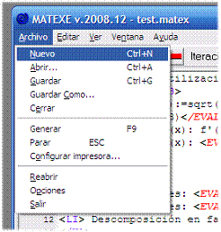
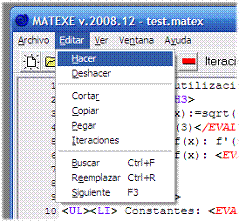
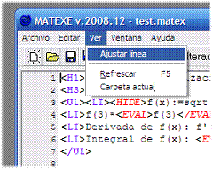
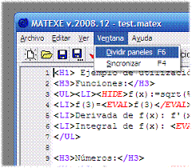
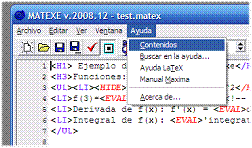

Menú archivo

Nuevo: Crea un nuevo documento.
Abrir: Abre un documento existente.
Guardar: Guarda el documento actual.
Guardar como: Guarda el documento actual con otro nombre.
Cerrar: Cierra el documento actual.
Generar: Genera el documento actual y muestra el resultado en el panel de previsualización.
Parar: Finaliza el cálculo y cierra la sesión Maxima
Configurar impresora: Muestra el cuadro de dialogo de opciones de impresión. Aquí se puede elegir la impresora, la orientación, el papel, etc.
Reabrir: Muestra los últimos documentos utilizados.
Opciones: Muestra el cuadro de dialogo de opciones de programa.
Salir: Finaliza el programa.
Menú Editar

Hacer/Deshacer: Permite deshacer o rehacer los últimos cambios en el editor de código.
Cortar/Copiar/Pegar: Duplica o mueve texto en el editor de código.
Iteraciones: Establece el número de veces que se genera el documento.
Buscar: Busca texto en el editor de código y en log.
Reemplazar: Reemplaza texto en el editor de código y en log.
Siguiente: Busca la siguiente aparición de la última búsqueda realizada.
Menú ver

Ajustar línea: Ajusta el ancho de línea al ancho de la ventana.
Refrescar: Recarga el archivo previsualizado sin recalcularlo de nuevo.
Carpeta actual: Abre la carpeta del documento actual.
Menú ventana

Dividir paneles: Divide la ventana en dos paneles con el % establecido en opciones.
Sincronizar: Sincroniza la posición de la previsualización con la posición del editor de código.
Menú ayuda

Contenidos: Abre la ayuda en el panel de contenidos.
Buscar en la ayuda: Abre la ayuda y busca la palabra seleccionada en el editor o el objeto activo.
Ayuda LaTeX: Referencia rápida LaTeX.
Ayuda Maxima:
Ayuda HTML:
Manual Maxima: Abre un pdf con información de Maxima.
Created with the Personal Edition of HelpNDoc: Free PDF documentation generator